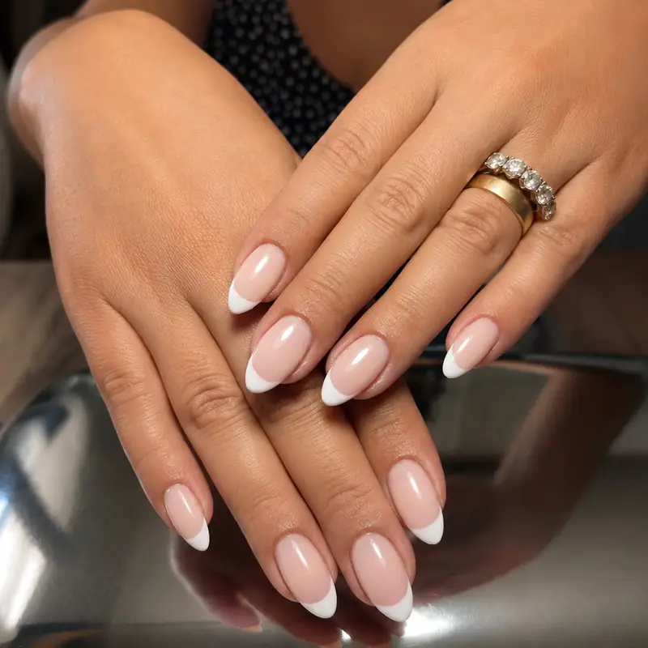

İzmir protez tırnak uygulaması arıyorsanız, Fleura Nails'in VIP hizmet anlayışıyla tanışın. Jel tırnak teknolojisi kullanarak, doğal görünümlü ve uzun ömürlü protez tırnak uygulamaları sunuyoruz.

Neden Fleura Nails'te Protez Tırnak?
İzmir'de protez tırnak yaptırmak isteyenler için Fleura Nails, kalite ve hijyen standartlarında taviz vermeyen bir seçenek sunuyor. İzmir geneline VIP hizmet anlayışıyla, tırnak sağlığınızı ön planda tutarak uygulama yapıyoruz.
Protez tırnak uygulamalarımızda profesyonel kullanıma yönelik jel ürünleri tercih ediyoruz. Doğal tırnağı aşırı inceltmeden, istediğiniz uzunluk ve şekilde dengeli bir sonuç hedefliyoruz.
İzmir Protez Tırnak Hizmetlerimiz
- Jel Tırnak Uygulaması: Doğal görünüm ve uzun ömür
- Tırnak Uzatma: Badem, kare, stiletto, coffin şekilleri
- Protez Tırnak Dolgusu: Düzenli bakım ve yenileme
- Özel Tasarım: Nail art ve dekoratif uygulamalar
- Tırnak Onarımı: Kırık veya hasarlı tırnaklar için
Steril Ortam ve Profesyonel Uygulama
İzmir'de protez tırnak yaptırırken hijyen en önemli kriterlerden biridir. Fleura Nails olarak tüm metal ekipmanlarımızı her müşteri sonrası sterilize ediyor, törpü ve buffer gibi malzemelerde tek kullanımlık ürünler tercih ediyoruz. Adresinize geldiğimizde çalışma alanını kendi örtümüzle kuruyor ve her uygulama öncesi dezenfekte ediyoruz.
Ekibimiz güncel protez tırnak tekniklerini takip ediyor ve her uygulamayı tırnak yapınıza göre planlıyor. Uygulama öncesinde tırnaklarınızı değerlendirip size uygun yöntemi ve beklenen sonucu birlikte netleştiriyoruz.
Tüm İzmir'e VIP Hizmet
İzmir'in her ilçesine planlı ve profesyonel VIP hizmet sunuyoruz. Narlıdere, Güzelbahçe, Konak, Karşıyaka, Bornova, Bayraklı, Çiğli, Buca, Balçova ve Karabağlar dahil İzmir genelinde adresinize gelerek hizmet veriyoruz. Balçova'da protez tırnak için özel sayfamızı ve İzmir kalıcı oje hizmetimizi inceleyebilirsiniz. Protez tırnak dünyasını daha yakından tanımak için protez tırnak rehberimize göz atabilirsiniz.
İzmir Evde Protez Tırnak Hizmeti
Fleura Nails'in fiziksel bir salonu yok: protez tırnak uygulamasını doğrudan sizin adresinizde yapıyoruz. Ev, ofis veya otel farketmiyor; tüm ekipman, lamba ve malzeme bizimle geliyor. Bu model özellikle küçük çocuğu olan anneler, yoğun çalışan profesyoneller ve trafikte vakit kaybetmek istemeyenler için işleri kolaylaştırıyor — salon sırası, park sorunu ve yol süresi tamamen ortadan kalkıyor.
Randevu nasıl oluşturuluyor?
Randevu WhatsApp veya telefonla oluşturuluyor. Adresinizi, istediğiniz uygulamayı ve uygun gününüzü yazmanız yeterli. Tırnaklarınızın güncel bir fotoğrafını gönderirseniz işlem süresini ve varsa önce söküm gerekip gerekmediğini baştan söyleyebiliyoruz. Programımız uygunsa aynı gün randevu da açılabiliyor, bu yüzden acil durumlarda yazmadan varsaymayın.
Hangi bölgelere geliniyor?
İzmir genelinde hizmet veriyoruz. Karşıyaka, Bornova, Balçova, Narlıdere, Buca, Çiğli, Konak ve Karabağlar için ayrı sayfalarımızda bölgeye özel detayları bulabilirsiniz. Merkez ilçelerde ulaşım fiyatlarımıza dahil; Çeşme, Alaçatı ve Urla gibi uzak noktalarda mesafeye göre ulaşım farkı doğabiliyor ve bunu randevudan önce net olarak bildiriyoruz. Sürecin tamamı ve tüm ilçeler için İzmir evde tırnak hizmeti sayfasına bakabilirsiniz.
İşlem öncesi ne hazırlamanız gerekiyor?
Özel bir hazırlık gerekmiyor. İhtiyacımız olan tek şey masa yüksekliğinde bir yüzey, iki sandalye ve yakında bir priz. Çalışma alanını kendi örtümüzle biz kuruyoruz, işlem sonunda toplayıp yanımızda götürüyoruz — arkamızda toz veya artık bırakmıyoruz. Ellerinizde krem veya yağ varsa uygulamadan önce yıkamanız yeterli.
Hijyen adresinizde nasıl sağlanıyor?
Metal ekipmanlarımız her müşteri sonrası otoklavda sterilize ediliyor; törpü ve buffer gibi malzemelerde tek kullanımlık ürünler tercih ediyoruz. Kurduğumuz çalışma alanı her uygulama öncesinde dezenfekte ediliyor. Böylece kendi evinizde, kullanılan malzemenin size özel olduğunu görerek işlem yaptırıyorsunuz.
Uygulama ne kadar sürüyor?
Yeni bir protez tırnak uygulaması ortalama 2-2,5 saat, dolgu randevusu ise daha kısa sürüyor. Bu süre boyunca kendi evinizde olduğunuz için kahvenizi içebilir, dizinizi açabilir veya sohbet edebilirsiniz. Aynı adreste birden fazla kişi varsa arka arkaya planlıyoruz; anne-kız ve arkadaş grubu randevuları bu yüzden sık tercih ediliyor.
Protez Tırnak Çeşitleri: Jel ve Polygel
Protez tırnak uygulamasında en sık tercih edilen iki yöntem bulunur ve her biri farklı ihtiyaçlara yanıt verir. Jel tırnak, doğal görünümü ve esnek yapısı sayesinde günlük kullanımda en çok tercih edilen seçenektir; ince ve parlak bir sonuç sunar. Polygel ise yeni nesil bir üründür: hem hafif hem de dayanıklıdır, kokusuzdur ve tırnağa daha az yük bindirir.
İzmir'de protez tırnak yaptırırken hangi yöntemin size uygun olduğuna, tırnak yapınıza ve beklentinize göre uzman ekibimizle birlikte karar veriyoruz. Tırnak uzatma teknikleri hakkındaki yazımızda bu yöntemleri daha ayrıntılı karşılaştırabilirsiniz.
İzmir Jel Tırnak: Hangi Uygulamayı Arıyorsunuz?
"Jel tırnak" ifadesi günlük kullanımda iki farklı işlemi anlatabiliyor ve karışıklık yaratıyor:
- Jel ile tırnak uzatma (protez tırnak): Doğal tırnağın ucuna form veya tips yerleştirilerek jelle uzunluk kazandırılır. Uzun, belirgin tırnak isteyenlerin aradığı uygulama bu. Bu sayfada anlattığımız işlem.
- Jel güçlendirme: Tırnak uzatılmaz; mevcut doğal tırnağın üzerine ince bir jel katmanı çekilerek kırılmaya karşı dayanıklılık kazandırılır. Tırnağı uzatmadan sağlamlaştırmak isteyenler için uygundur ve genellikle kalıcı oje ile birlikte uygulanır.
Hangisine ihtiyacınız olduğundan emin değilseniz tırnaklarınızın fotoğrafını gönderin; mevcut uzunluğunuza ve tırnak yapınıza bakıp size uygun olanı öneriyoruz. İki uygulamanın güncel tutarlarını fiyat listemizde ayrı ayrı görebilirsiniz.
Protez Tırnak Uygulaması Adım Adım
Fleura Nails olarak protez tırnak uygulamasını hijyen ve titizlik ilkesiyle şu adımlarla gerçekleştiriyoruz:
- Tırnak Hazırlığı: Doğal tırnak temizlenir, şekillendirilir ve yüzey uygulamaya hazır hale getirilir.
- Form Yerleştirme: İstenen uzunluk ve şekle göre tırnak formu veya tips yerleştirilir.
- Jel/Polygel Uygulama: Seçilen ürün kat kat ve dengeli biçimde uygulanır.
- UV/LED Kürleme: Her kat özel lamba altında sertleştirilir; bu adım kalıcılığın temelidir.
- Şekillendirme ve Törpüleme: Tırnak, tercih ettiğiniz şekle (badem, kare, coffin, stiletto) getirilir.
- Parlatma ve Bitirme: Son kat ile parlak veya mat bir finiş verilir, dilerseniz nail art eklenir.
Tüm işlem boyunca steril ve tek kullanımlık malzemeler kullanır, evinizin konforunda profesyonel bir sonuç sunarız.
Protez Tırnak Dolgusu ve Bakım Aralığı
Protez tırnaklar, doğal tırnağınız uzadıkça dip kısımda boşluk oluşturur. Bu nedenle görünümü ve dayanıklılığı korumak için 2-3 haftada bir dolgu yaptırmanızı öneririz. Dolgu, tüm uygulamayı yenilemekten hem daha ekonomik hem de tırnak sağlığı açısından daha korunaklıdır.
- Ağır ev işleri ve kimyasallarla temasta eldiven kullanın.
- Tırnak etlerinizi düzenli olarak nemlendirin.
- Protez tırnağı asla zorlayarak sökmeyin; profesyonel çıkarma tercih edin.
- Kırılma veya kalkma fark ettiğinizde randevu için bize ulaşın.
Günlük bakım alışkanlıkları için tırnak şekilleri rehberimizi inceleyebilirsiniz.
Doğal Görünüm ve Tırnak Sağlığı
Kaliteli bir protez tırnak uygulamasının en önemli özelliği, doğal bir görünüm sunarken tırnak sağlığını korumasıdır. Fleura Nails olarak, tırnak yatağına uygun kalınlıkta ve dengeli uygulama yaparak abartılı, kalın görünen sonuçlardan kaçınıyoruz. Doğru hazırlanan bir protez tırnak, kendi tırnağınızmış gibi görünür ve günlük hayatınızı kısıtlamaz.
Uygulama kadar çıkarma da tırnak sağlığı açısından kritiktir. Protez tırnağın zorlanarak sökülmesi doğal tırnakta incelme ve hasara yol açabilir. Bu nedenle her zaman profesyonel çıkarma yöntemi kullanıyor, seanslar arasında tırnaklarınızın nefes almasına özen gösteriyoruz. Tırnak sağlığınızı korumaya yönelik ipuçları için blog bölümümüzdeki rehberlerimizden faydalanabilirsiniz.
İzmir Protez Tırnak Fiyatlarını Etkileyen Faktörler
Protez tırnak fiyatı tek bir rakamla ifade edilemez; çünkü uygulama kişiye özeldir. Fiyatı belirleyen başlıca faktörler şunlardır:
- Tırnak Uzunluğu ve Şekli: Uzun ve belirgin şekiller daha fazla malzeme ve işçilik gerektirir.
- Uygulama Türü: Jel veya polygel tercihi maliyeti etkiler.
- Nail Art ve Tasarım: Taş, desen, ombre gibi özel tasarımlar ek süre ve emek ister.
- Yeni Uygulama mı Dolgu mu: Dolgu işlemleri genellikle ilk uygulamadan daha uygundur.
Size özel net bir fiyat için tırnak yapınızı ve beklentinizi öğrenmemiz gerekir. WhatsApp üzerinden veya 0555 890 35 11 numarasından bize ulaşarak güncel fiyat bilgisi alabilirsiniz.
Protez Tırnak Randevusu Alın
İzmir'de evinize gelen protez tırnak uygulaması için WhatsApp'tan yazın; form, uzunluk ve toplam süreyi birlikte netleştirelim. Genellikle aynı gün dönüş yapıyoruz.
Bölgeler: Karşıyaka · Bornova · Bayraklı · Konak · Balçova · Narlıdere · Güzelbahçe · Buca · Çeşme · Alaçatı · Urla — tüm ilçeler ve evde hizmet süreci
İlgili hizmetler: İzmir kalıcı oje · Güncel fiyatlar · Evde protez tırnak rehberi
Sıkça Sorulan Sorular
Protez tırnak ne kadar dayanır?
Doğru bakım ile protez tırnak uygulamaları 3-4 hafta dayanır. Düzenli dolgu ile kalıcılığı artırabilirsiniz.
Protez tırnak tırnaklarıma zarar verir mi?
Profesyonel uygulama ve doğru çıkarma tekniği ile protez tırnak, doğal tırnaklarınıza zarar vermez.
İzmir protez tırnak fiyatları nedir?
Manikür + protez tırnak + kalıcı oje paketi 1.500 ₺'den başlıyor; İzmir merkez ilçelerde ulaşım, ekipman ve tek kullanımlık steril malzeme bu tutara dahildir. Uzunluk, tasarım detayı ve tırnağınızın durumu fiyatı etkiler. Tüm kalemleri fiyat listemizde görebilir veya 0555 890 35 11 numarasından bize ulaşabilirsiniz.
Protez tırnak dolgusu ne sıklıkla yapılmalı?
Doğal tırnağınız uzadıkça dip kısımda boşluk oluşacağından 2-3 haftada bir dolgu yaptırmanızı öneririz. Düzenli dolgu, görünümü ve dayanıklılığı korur.
Jel tırnak mı polygel mi daha iyi?
İkisinin de avantajları farklıdır. Jel daha doğal ve esnek bir görünüm sunarken, polygel daha hafif ve dayanıklı bir yapı sağlar. Tırnak yapınıza ve beklentinize göre uzman ekibimizle birlikte en uygun seçeneği belirliyoruz.
Protez tırnak ne kadar sürer?
İlk uygulama ortalama 2-2,5 saat sürüyor; dolgu randevusu bundan daha kısa. Nail art veya detaylı tasarım eklendiğinde süre bir miktar uzayabilir. Adresinize geldiğimiz için bu sürenin tamamını kendi evinizde geçiriyorsunuz.
Protez tırnak randevusu nasıl alınır?
WhatsApp veya telefonla adresinizi, istediğiniz uygulamayı ve uygun gününüzü yazmanız yeterli. Tırnaklarınızın güncel fotoğrafını gönderirseniz süreyi ve söküm gerekip gerekmediğini baştan söylüyoruz. Programımız uygunsa aynı gün randevu da açabiliyoruz.
Evde protez tırnak hizmeti nasıl alınır?
Fleura Nails fiziksel salon yerine adresinize gelir. WhatsApp veya telefonla randevu oluşturduğunuzda uzman ekibimiz steril ekipmanla evinize gelir ve işlemi evinizin konforunda tamamlar.
Son güncelleme: